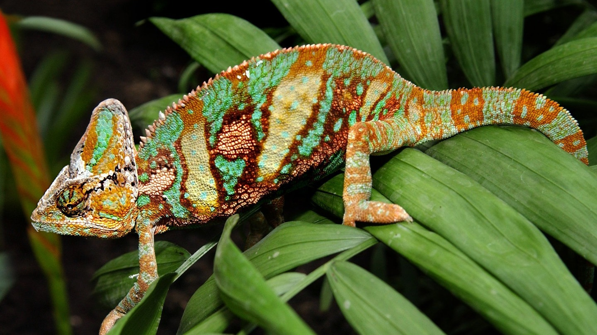
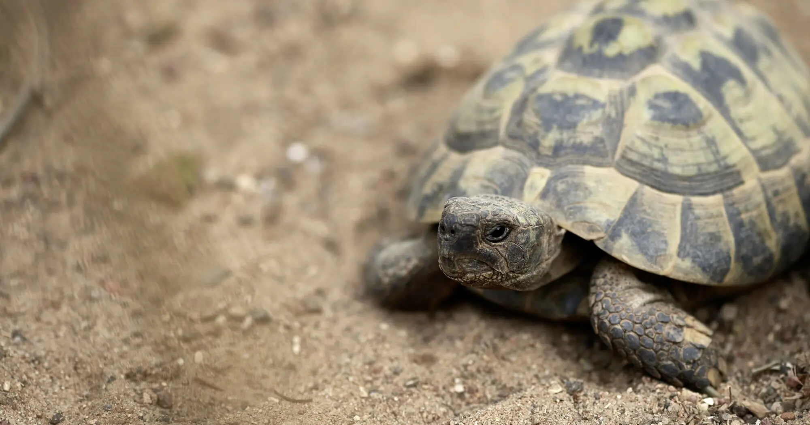

Reptiles are a class of cold-blooded vertebrates characterized by dry, scaly skin and typically living on
land. Reptiles include lizards, snakes, crocodiles, and turtles. They are adaptable and
occur in a variety of climates, with their body temperature depending on the environment.


Can you keep them as pets?
Yes, reptiles can be kept as pets, but it is very demanding, as they have specific needs that
require species-appropriate care. They need suitable terrariums with controlled temperature, humidity,
and lighting, as well as appropriate hiding places and substrate. Reptiles are ideal for people
who enjoy observing them, but they are less suitable for close contact or for small children.